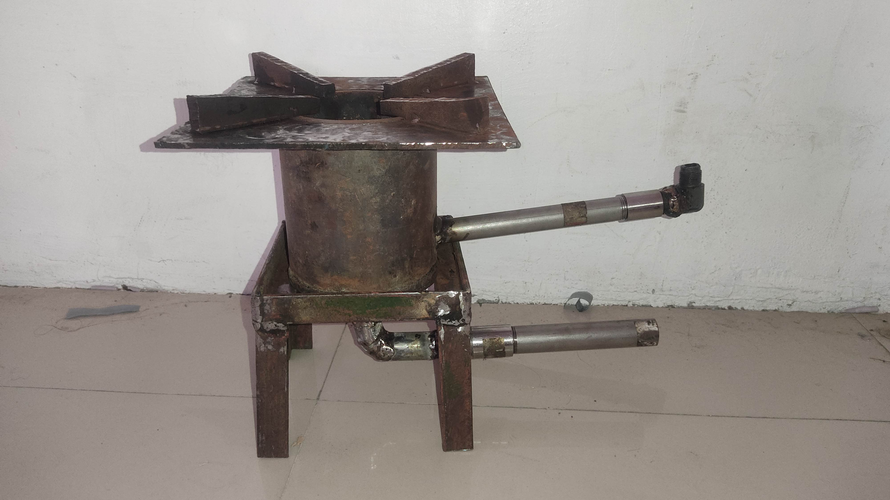

DEVELOPERS
The members of CSO (Convenient Stove Oil) Super Kalan.
Jecarl Octavio

Hacker of CSO (Convenient Stove Oil) Super Kalan.
The Super Kalan Utilizing Used Oil business aims to provide an innovative and environmental conscious solution for cost-effective heating usingg used oil as a fuel source. Our company specialize in the design, manufactures, sales and maintenance of super kalan system, which efficiently burn used oil generate heat.
The super kalan using used oil is sustainable, cost-effective, and user friendly cooking stove that utilize used cooking oil as a fuel source. It offers fuel effciency, environmental benifits, and ease of use, making it an attractive option for those seeking an eco-friendly cooking solution.
The purpose of devolping this product is to promote sustainable and eco-friendly cooking pratices by repurposing used oil as a fuel source. Super Kalan helps reduce waste and minimize the environmental impact of oil disposal. It provides individuals, households, and businessw with a pratical and accessible solution to cook efficiently while contributing to a greener and more sustainable future.
The members of CSO (Convenient Stove Oil) Super Kalan.
Hacker of CSO (Convenient Stove Oil) Super Kalan.